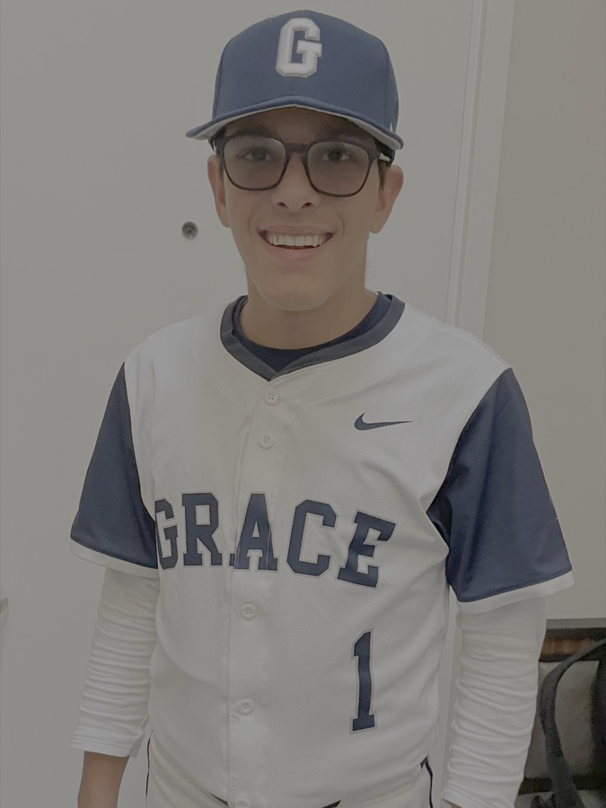

My name is Nicholas Dolfato, and I am a 10th-grade student at Grace Church School in the East Village of Manhattan, New York.
Throughout my life, I have had a passion for sports. I currently play on the varsity baseball team at my school, and I also play basketball recreationally. I have also spent lots of time around little kids, so when asked about an idea for my 10th-grade project, I wanted to tie "kids" and "sports" together. After narrowing down ideas, I chose to make a website that would increase access to sports for kids with disabilities in New York City.
I decided to make this website because my project topic has a personal meaning to me. I was born with a minor physical disability that was fixed with surgery when I was 10. However, before that, my mom wanted to enroll me in sports programs; she did not think any typical programs were good fits for me. I could not run that fast and didn't have great coordination. When she enrolled me in a soccer program (for kids without disabilities), I struggled, almost always finishing last in warm-up sprints. Surprisingly, I was in this program for two years because it was fun, and my mom did not know the specifics of why I was so slow (soon after, she did, and I had surgery a year later).
Because of this, it was clear that I was not a good fit for typical sports programs. I know that currently, there are numerous boys and girls younger than me who have similar physical issues that I had when I was a bad soccer player. A substantial number of these kids would be excited to sign up for sports classes, whether that is soccer, basketball, etc.; most elementary- and middle-school-aged kids are very active. However, they could be embarrassed in a group with kids who are faster, stronger, and way more coordinated, and may be turned off from sports. Making sure they are in a program where every kid has a disability will allow them to get the training/coaching that is right for them by coaches who have experience and know how to teach kids that may not be athletic. They will feel like they belong, which is why this site will hopefully help.
